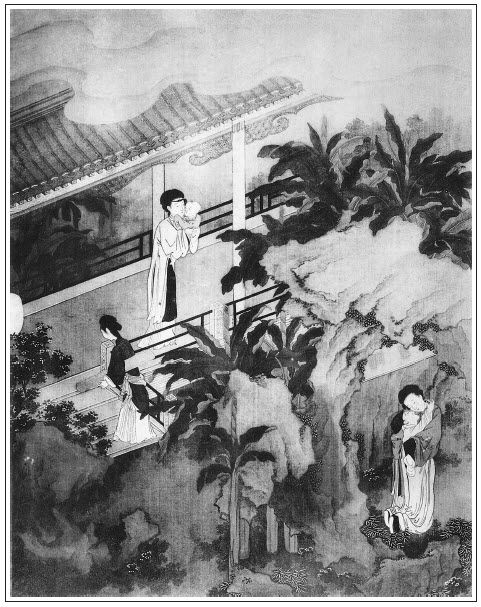

張回篇首又找金蓮「後庭花」一事，特特與王六兒一扭同心，見二人同惡共濟，以結此梵僧藥之案，為後文同時死西門之地也。
桂姐自丁二官之後，西門久已疏淡。乃近復漸漸熱落者，干女之故。則月娘不能相夫遠色親賢，甘於自引匪類入室，其罪何如！而西門為色所迷，明明看破虛假，卻不能跳出圈套，故用伯爵之戲，以點醒西門之心也。
伯爵數回說明桂姐之於三官，而西門乃即有山洞之淫，是其愚而不斷，且自喜梵僧之藥，欲賣弄精神，亦非有意於桂姐也。夫人之精神，值得幾番賣弄哉！故沿至後文驚愛月等事，皆一層層寫入死地也。
為結文幻化寫一孝哥，為孝哥寫一薛姑子。用筆深細，固不必說。至於為一壬子，卻寫一庚戌日；為一庚戌日，卻寫一官哥剃頭；又先寫一西門修養，後又賠寫一廿四日。總之文字不肯直直便出，使人看出也。
西門吃梵僧藥而死其身，月娘服薛姑子藥而亡其嗣。兩兩相對，真正一對愚人。
上回品玉寫一貓，此回又寫一貓。上文猶是點明雪賊，此回卻明明寫貓驚官哥。蓋為後文作引：一伏金蓮之深心，一見瓶兒之不能防微杜漸也。
金蓮之於敬濟，自見嬌娘後，而元夜一戲，得金蓮一戲，罰唱一戲，至此斗葉子一戲，乃於買汗巾串入花園之戲，方討結煞。一見西門之疏，一見二人之漸。而處處寫月娘，又深罪月娘也。
王婆於金蓮袖內掏出汗巾，為西門作合。今敬濟亦以汗巾作合，一絲不爽。
詩曰：
春樓曉日珠簾映，紅粉春妝寶鏡催。
已厭交歡憐舊枕，相將遊戲繞池台。
坐時衣帶縈纖草，行處裙裾掃落梅。
更道明朝不當作，相期共鬥管弦來。

話說那日西門慶在夏提刑家吃酒，見宋巡按送禮，他心中十分歡喜。夏提刑亦敬重不同往日，繡旁勢利一時便起。攔門勸酒，吃至三更天氣才放回家。潘金蓮又早向燈下除去冠兒，設放衾枕，薰香澡牝等候。西門慶進門，接著，見他酒帶半酣，連忙替他脫衣裳。春梅點茶吃了，打發上床歇息。見婦人脫得光赤條身子，張夾又金蓮先脫。坐在床沿，低垂著頭，將那白生生腿兒橫抱膝上纏腳，繡旁那得不愛。換了雙大紅平底睡鞋兒。西門慶一見，淫心輒起，麈柄挺然而興。因問婦人要淫器包兒，婦人忙向褥子底下摸出來遞與他。西門慶把兩個托子都帶上，一手摟過婦人在懷裡，因說：「你達今日要和你干個『後庭花兒』，你肯不肯？」那婦人瞅了一眼，說道：「好個沒廉恥冤家，你成日和書僮兒小廝干的不值了，又纏起我來了，你和那奴才幹去不是！」西門慶笑道：「怪小油嘴，罷麼！你若依了我，又稀罕小廝做甚麼？你不知你達心裡好的是這樁兒，管情放到裡頭去就過了。」繡旁哄騙口角。張旁哄騙口角，妙。婦人被他再三纏不不過，說道：「奴只怕挨不得你這大行貨。你把頭子上圈去了，我和你耍一遭試試。」西門慶真個除去硫磺圈，根下只束著銀托子，令婦人馬爬在床上，屁股高蹶，將唾津塗抹在龜頭上，往來濡研頂入。龜頭昂健，半晌僅沒其稜。婦人在下蹙眉隱忍，口中咬汗巾子難捱，叫道：「達達慢著些。這個比不的前頭，撐得裡頭熱炙火燎的疼起來。」這西門慶叫道：張眉必寫潘六兒後庭，特與王六兒一映，總是見後文兩人用藥以死西門，同出一手也。則此時試藥，已兩人合符矣。「好心肝，你叫著達達，不妨事。到明日買一套好顏色妝花紗衣服與你穿。」婦人道：「那衣服倒也有在，我昨日見李桂姐穿的那玉色線掐羊皮挑的金油鵝黃銀條紗裙子，倒好看，說是裡邊買的。張旁過入在嬌無痕。他每都有，只我沒這裙子。倒不知多少銀子，你倒買一條我穿罷了。」張夾也是一間，與上文品玉作對。西門慶道：「不打緊，我到明日替你買。」一壁說著，在上頗作抽拽，只顧沒稜露腦，淺抽深送不已。婦人回首流眸叫道：「好達達，這裡緊著人疼的要不的，如何只顧這般動作起來了？我央及你，好歹快些丟了罷！」這西門慶不聽，且扶其股，玩其出入之勢。一面口中呼道：「潘五兒，小淫婦兒，你好生浪浪的叫著達達，哄出你達達㞞兒出來罷。」那婦人真個在下星眼朦朧，鶯聲款掉，柳腰款擺，香肌半就，口中艷聲柔語，百般難述。良久，西門慶覺精來，兩手扳其股，極力而搧之，扣股之聲響之不絕。那婦人在下邊呻吟成一塊，不能禁止。臨過之時，西門慶把婦人屁股只一扳，麈柄盡沒至根，直抵於深異處，其美不可當。張夾寫得出。於是怡然感之，一洩如注。婦人承受其精，二體偎貼。良久拽出麈柄，但見猩紅染莖，蛙口流涎，張夾是新破瓜的？婦人以帕抹之，方才就寢。一宿晚景題過。
次日，西門慶早晨到衙門中回來，有安主事、黃主事那裡差人來下請書，二十二日在磚廠劉太監莊上設席，請早去。西門慶打發來人去了，從上房吃了粥，正出廳來，只見篦頭的小周兒扒倒地下磕頭。西門慶道：「你來的正好，我正要篦篦頭哩。」張旁因要出壬子日，生出官哥剃頭檢日。因官哥剃頭，倒算出西門篦頭。筆墨無痕之妙。於是走到翡翠軒小卷棚內，坐在一張涼椅兒上，除了巾幘，打開頭髮。小周兒鋪下梳篦家活，與他篦頭櫛發。觀其泥垢，辨其風雪，跪下討賞錢，說：「老爹今歲必有大遷轉，發上氣色甚旺。」西門慶大喜。篦了頭，又叫他取耳，掐捏身上。他有滾身上一弄兒家活，到處與西門慶滾捏過，又行導引之法，把西門慶弄的渾身通泰。賞了他五錢銀子，教他吃了飯，伺候著哥兒剃頭。西門慶就在書房內，倒在大理石床上就睡著了。
那日楊姑娘起身，王姑子與薛姑子要家去。吳月娘將他原來的盒子都裝了些蒸酥茶食，打發起身。張旁為下文求子安根。兩個姑子，每人都是五錢銀子，兩個小姑子，與了他兩疋小布兒，管待出門。薛姑子又囑咐月娘：「到了壬子日把那藥吃了，管情就有喜事。」月娘道：「薛爺，你這一去，張旁四字直貫至瓶兒死日，明眼人自知。八月裡到我生日，好來走走，我這裡盼你哩。」薛姑子合掌問訊道：「打攪。菩薩這裡，我到那日一定來。」於是作辭。月娘眾人都送到大門首。月娘與大妗子回後邊去了。只有玉樓、金蓮、瓶兒、西門大姐、李桂姐抱著官哥兒，來到花園裡遊玩。李瓶兒道：「桂姐，你遞過來，等我抱罷。」桂姐道：「六娘，不妨事，我心裡要抱抱哥子。」玉樓道：「桂姐，你還沒到你爹新收拾書房裡瞧瞧哩。」到花園內，金蓮見紫薇花開得爛熳，摘了兩朵與桂姐戴。繡旁偏有弄頭於是順著松牆兒到翡翠軒，見裡面擺設的床帳屏幾、書畫琴棋，極其瀟灑。床上綃帳銀鉤，冰簟珊枕。張夾先為山洞一番描寫。西門慶倒在床上，睡思正濃。旁邊流金小篆，焚著一縷龍涎。綠窗半掩，窗外芭蕉低映。潘金蓮且在桌上掀弄他的香盒兒，玉樓和李瓶兒都坐在椅兒上，西門慶忽翻過身來，看剛見眾婦人都在屋裡，便道：「你每來做甚麼？」金蓮道：「桂姐要看看你的書房，俺每引他來瞧瞧。」那西門慶見他抱著官哥兒，又引逗了一回。忽見畫童來說：「應二爹來了。」眾婦人都亂走不迭，往李瓶兒那邊去了。應伯爵走到松牆邊，看見桂姐抱著官哥兒，便道：「好呀！李桂姐在這裡。」故意問道：「你幾時來？」繡旁映前，先說那桂姐走了，說道：「罷麼，怪花子！又不關你事，問怎的？」張旁虛心。伯爵道：「好小淫婦兒，不關我事也罷，你且與我個嘴著。」於是摟過來就要親嘴。被桂姐用手只一推，罵道：「賊不得人意怪攮刀子，若不是怕諕了哥子，我這一扇把子打的你……」西門慶走出來看見，說道：「怪狗才，看諕了孩兒！」因教書僮：「你抱哥兒送與你六娘去。」那書僮連忙接過來。奶子如意兒正在松牆拐角邊等候，接的去了。伯爵和桂姐兩個站著說話，問：「你的事怎樣了？」桂姐道：「多虧爹這裡可憐見，差保哥替我往東京說去了。」伯爵道：「好，好，也罷了。如此你放心些。」說畢，桂姐就往後邊去了。伯爵道：「怪小淫婦兒，你過來，我還和你說話。」桂姐道：「我走走就來。」於是也往李瓶兒這邊來了。
伯爵與西門慶才唱喏坐的。西門慶道：「昨日我在夏龍溪家吃酒，大巡宋道長那裡差人送禮，送了一口鮮豬。繡旁以西門慶口腹，豈嗜一豬？而出之大巡，便覺視為上品異味。人情乎？勢利乎？吾所不解。我恐怕放不的，今早旋叫廚子來卸開，用椒料連豬頭燒了。你休去，如今請謝子純來，咱每打雙陸，同享了罷。」一面使琴童兒：「快請你謝爹去。你說應二爹在這裡。」琴童兒應諾去了。伯爵因問：「徐家銀子討來了不曾？」西門慶道：「賊沒行止的狗骨禿，明日才先與二百五十兩。你教他兩個後日來，少的，我家裡湊與他罷。」伯爵道：「這等又好了。怕不得他今日也買些鮮物兒來孝順你。」西門慶道：「倒不消教他費心。」說了一回，西門慶問道：「老孫、祝麻子兩個都起身去了不曾？」伯爵道：「自從李桂兒家拿出來，在縣裡監了一夜，第二日，三個一條鐵索，都解上東京去了。到那裡，沒個清潔來家的！你只說成日圖飲酒吃肉，好容易吃的果子兒！似這等苦兒，也是他受。路上這等大熱天，著鐵索扛著，又沒盤纏，有甚麼要緊。」繡眉數語蓋為此輩油手幫閒現身說法，不可作戲談閒話，草草看過。西門慶笑道：「怪狗才，充軍擺戰的不過！誰教他成日跟著王家小廝只胡撞來！他尋的苦兒他受。」伯爵道：「哥說的有理。蒼蠅不鑽沒縫的雞蛋，他怎的不尋我和謝子純？清的只是清，渾的只是渾。」
正說著，謝希大到了。唱畢喏坐下，只顧搧扇子。西門慶問道：「你怎的走恁一臉汗？」希大道：「哥別題起。今日平白惹了一肚子氣。大清早晨，老孫媽媽子走到我那裡，說我弄了他去。恁不合理的老淫婦！你家漢子成日摽著人在院裡大酒大肉吃，大把撾了銀子錢家去，你過陰去來？誰不知道！你討保頭錢，分與那個一分兒使也怎的？繡眉謝希大只同走一遭，便受一遭之累，擇交可不慎哉！交我扛了兩句走出來。不想哥這裡呼喚。」伯爵道：「我剛才和哥不說，新酒放在兩下裡，清自清，渾自渾。當初咱每怎麼說來？我說跟著王家小廝，到明日有一失。今日如何？撞到這網裡，怨悵不的人！」西門慶道：「王家那小廝，有甚大氣概？腦子還未變全，養老婆！還不夠俺每那咱撒下的，羞死鬼罷了！」伯爵道：「他曾見過甚麼大頭面目，比哥那咱的勾當，題起來把他諕殺罷了。」繡眉一自誇，一旁譽，真相知。說畢，小廝拿茶上來吃了。西門慶道：「你兩個打雙陸。後邊做著水面，等我叫小廝拿來咱每吃。」不一時，琴童來放桌兒。畫童兒用方盒拿上四個小菜兒，又是三碟兒蒜汁、一大碗豬肉鹵，一張銀湯匙、三雙牙箸。擺放停當，三人坐下，然後拿上三碗麵來，各人自取澆鹵，傾上蒜醋。那應伯爵與謝希大拿起箸來，只三扒兩咽就是一碗。兩人登時狠了七碗。西門慶兩碗還吃不了，說道：「我的兒，你兩個吃這些！」伯爵道：「哥，今日這面是那位姐兒下的？又好吃又爽口。」謝希大道：「本等鹵打的停當，我只是剛才吃了飯了，不然我還禁一碗。」兩個吃的熱上來，把衣服脫了。見琴童兒收家活，便道：「大官兒，到後邊取些水來，俺每漱漱口。」謝希大道：「溫茶兒又好，熱的燙的死蒜臭。」少頃，畫童兒拿茶至。三人吃了茶，出來外邊松牆外各花台邊走了一道。只見黃四家送了四盒子禮來。平安兒掇進來與西門慶瞧：一盒鮮烏菱、一盒鮮荸薺、四尾冰湃的大鰣魚、一盒枇杷果。張旁四色儘是熱物，非如後衣梅等也。伯爵看見說道：「好東西兒！他不知那裡剜的送來，我且嘗個兒著。」一手撾了好幾個，遞了兩個與謝希大，說道：「還有活到老死，還不知此是甚麼東西兒哩。」西門慶道：「怪狗才，還沒供養佛，就先撾了吃？」伯爵道：「甚麼沒供佛，我且入口無贓著。」西門慶吩咐：「交到後邊收了。問你三娘討三錢銀子賞他。」伯爵問：「是李錦送來，是黃寧兒？」平安道：「是黃寧兒。」伯爵道：「今日造化了這狗骨禿了，又賞他三錢銀子。」繡眉此書只一味要打破世情，故不論事之大小冷熱，但世情所有，便一筆刺入。這裡西門慶看著他兩個打雙陸不題。
且說月娘和桂姐、李嬌兒、孟玉樓、潘金蓮、李瓶兒、大姐，都在後邊吃了飯，在穿廊下坐的。只見小周兒在影壁前探頭舒腦的，李瓶兒道：「小周兒，你來的好。且進來與小大官兒剃剃頭，他頭髮都長長了。」小周兒連忙向前都磕了頭，說：「剛才老爹吩咐，交小的進來與哥兒剃頭。」月娘道：「六姐，你拿歷頭看看，好日子，歹日子，就與孩子剃頭？」金蓮便交小玉取了歷頭來，揭開看了一回，張旁回憶與王婆看日，何如？說道：「今日是四月廿一日，是個庚戌日，金定婁金狗當直，宜祭祀、官帶、出行、裁衣、沐浴、剃頭、修造、動土，宜用午時。張旁如此觀出壬子日，盲人那得知？──好日期。」張夾為一壬子日陪一庚戌日。月娘道：「既是好日子，叫丫頭熱水，你替孩兒洗頭，教小周兒慢慢哄著他剃。」繡眉看了好日子剃頭，卻幾乎將孩子剃殺，陰陽可信乎？不可信乎？微詞逗出。小玉在旁替他用汗巾兒接著頭髮，才剃得幾刀，這官哥兒呱的怪哭起來。那小周連忙趕著他哭只顧剃，不想把孩子哭的那口氣憋下去，不做聲了，臉便脹的紅了。李瓶兒諕慌手腳，連忙說：「不剃罷，不剃罷！」那小周兒諕的收不迭家活，往外沒腳的跑。月娘道：「我說這孩予有些不長俊，護頭。自家替他剪剪罷。平白教進來剃，剃的好麼！」天假其便，那孩子憋了半日氣，才放出聲來。李瓶兒方才放心，只顧拍哄他，說道：「好小周兒，恁大膽！平白進來把哥哥頭來剃了去了。剃的恁半落不合的，欺負我的哥哥。張旁活畫。還不拿回來，等我打與哥哥出氣。」繡眉開口便如天造地設，絕無一語杜撰，所以為妙。於是抱到月娘跟前。月娘道：「不長俊的小花子兒，剃頭耍了你了，這等哭？剩下這些，到明日做剪毛賊。」引逗了一回，李瓶兒交與奶子。月娘吩咐：「且休與他奶吃，等他睡一回兒與他吃。」張旁畫。奶子抱的前邊去了。只見來安兒進來取小周兒的家活，說諕的小周兒臉焦黃的。月娘問道：「他吃了飯不曾？」來安道：「他吃了飯。爹賞他五錢銀子。」月娘教來安：「你拿一甌子酒出去與他。諕著人家，好容易討這幾個錢！」小玉連忙篩了一盞，拿了一碟臘肉，教來安與他吃了去了。
吳月娘因教金蓮：「你看看歷頭，幾時是壬子日？」張眉如此寫壬子日，盲人那得知？蓋特為孝哥，鄭重見安胎，為月娘之奸也。張夾可知上文特為此一句，生出剃頭一段文字來。金蓮看了，說道：「二十三日是壬子日，交芒種五月節。」便道：「姐姐你問他怎的？」月娘道：「我不怎的，問一聲兒。」李桂姐接過歷頭來看了，說道：「這二十四日，苦惱是俺娘的生日！繡眉月娘悠然接上，妙在個中；桂姐突然插入，趣在言外。讀而噴飯者，猶只解得此文一半。我不得在家。」張旁此所為隨手遮蓋筆墨者也。張夾又映一個日子。月娘道：「前月初十日，是你姐姐生日，過了。這二十四日，可可兒又是你媽的生日了。原來你院中人家一日害兩樣病，做三個生日：日裡害思錢病，黑夜思漢子的病。早晨是媽媽的生日，晌午是姐姐生日，晚夕是自家生日。──怎的都擠在一塊兒？趁著姐夫有錢，攛掇著都生日了罷！」桂姐只是笑，不做聲。只見西門慶使了畫童兒來請，桂姐方向月娘房中妝點勻了臉，往花園中來。卷棚內，又早放下八仙桌兒，桌上擺設兩大盤燒豬肉並許多餚饌。眾人吃了一回，桂姐在旁拿鍾兒遞酒，伯爵道：「你爹聽著說，不是我索落你，人情兒已是停當了。你爹又替你縣中說了，不尋你了。虧了誰？還虧了我再三央及你爹，他才肯了。平白他肯替你說人情去？繡眉數語伯爵猶作戲說，若今人說來，便不以為戲矣。隨你心愛的甚麼曲兒，你唱個兒我下酒，也是拿勤勞准折。」桂姐笑罵道：「怪磣花子，你『虼蚤包網兒──好大面皮』！爹他肯信你說話？」伯爵道：「你這賊小淫婦兒！你經還沒念，就先打和尚。要吃飯，休惡了火頭！你敢笑和尚沒丈母，我就單丁擺佈不起你這小淫婦兒？你休笑話，我半邊俏還動的。」被桂姐把手中扇把子，盡力向他身上打了兩下。西門慶笑罵道：「你這狗才，到明日論個男盜女娼，還虧了原問處。」笑了一回，桂姐慢慢才拿起琵琶，橫擔膝上，啟朱唇，露皓齒，唱道：
[黃鶯兒]誰想有這一種。減香肌，憔瘦損。鏡鸞塵鎖無心整。脂粉倦勻，花枝又懶簪。空教黛眉蹙破春山恨。
伯爵道：「你兩個當初好來，如今就為他耽些驚怕兒，也不該抱怨了。」桂姐道：「汗邪了你，怎的胡說！」──張夾一段。
最難禁，譙樓上畫角，吹徹了斷腸聲。
伯爵道：「腸子倒沒斷，這一回來提你的斷了線，你兩個休提了。」被桂姐盡力打了一下，罵道：「賊攘刀的，今日汗邪了你，隻鬼混人的。」──張夾又一段。
[集資賓]幽窗靜悄月又明，恨獨倚幃屏。驀聽的孤鴻只在樓外鳴，把萬愁又還題醒。更長漏永，早不覺燈昏香燼眠未成。他那裡睡得安穩！
伯爵道：「傻小淫婦兒，他怎的睡不安穩？又沒拿了他去。落的在家裡睡覺兒哩。你便在人家躲著，逐日懷著羊皮兒，直等東京人來，一塊石頭方落地。」桂姐被他說急了，便道：「爹，你看應花子，不知怎的，只發訕纏我。」伯爵道：「你這回才認的爹了？」繡眉搶白得妙，奉承得巧，伯爵殊有竅桂姐不理他，張夾此處是兩番問答。彈著琵琶又唱：張夾又一段。
[雙聲疊韻]思量起，思量起，怎不上心？無人處，無人處，淚珠兒暗傾。
伯爵道：「一個人慣溺尿。一日，他娘死了，守孝打鋪在靈前睡。晚了，不想又溺下了。人進來看見褥子濕，問怎的來，那人沒的回答，只說：『你不知，我夜間眼淚打肚裡流出來了。』──就和你一般，為他聲說不的，只好背地哭罷了。」張夾又是一樣。桂姐道：「沒羞的孩兒，你看見來？汗邪了你哩！」──
我怨他，我怨他，說他不盡，誰知道這裡先走滾。自恨我當初不合他認真。
伯爵道：「傻小淫婦兒，如今年程，三歲小孩兒也哄不動，何況風月中子弟。你和他認真？你且住了，等我唱個南曲兒你聽：張夾反插伯爵唱，又是一樣。『風月事，我說與你聽：如今年程，論不得假真。個個人古怪精靈，個個人久慣牢成，倒將計活埋把瞎缸暗頂。張旁寫盡世情。老虔婆只要圖財，小淫婦兒少不得拽著脖子往前掙。苦似投河，愁如覓井。幾時得把業罐子填完，就變驢變馬也不幹這營生。』」當下把桂姐說的哭起來了。繡眉伯爵戲搶桂姐，似乎沒趣，不知桂姐此事非西門慶所喜，特留情不言耳。西門慶不言而伯爵代言之，正是大湊趣。張夾又是一樣。被西門慶向伯爵頭上打了一扇子，笑罵道：「你這搊斷腸子的狗才！生生兒吃你把人就歐殺了。」因叫桂姐：「你唱，不要理他。」謝希大道：「應二哥，你好沒趣！今日左來右去只欺負我這乾女兒。你再言語，口上生個大疔瘡。」那桂姐半日拿起琵琶，又唱：
[簇御林]人都道他志誠。
伯爵才待言語，被希大把口按了，繡眉又白描一曲，情景宛然。張夾又是一樣。說道：「桂姐你唱，休理他！」桂姐又唱道：
卻原來廝勾引。眼睜睜心口不相應。
希大放了手，伯爵又說：「相應倒好了。張夾又是一樣。心口裡不相應，如今虎口裡倒相應。不多，也只三兩炷兒。」桂姐道：「白眉赤眼，你看見來？」伯爵道：「我沒看見，在樂星堂兒裡不是？」連西門慶眾人都笑起來了。張旁桂姐亦笑，可知。桂姐又唱：
山盟海誓，說假道真，險些兒不為他錯害了相思病。負人心，看伊家做作，如何教我有前程？
伯爵道：「前程也不敢指望他，到明日，少不了他個招宣襲了罷。」桂姐又唱：張夾又是一番。
[琥珀貓兒墜]日疏日遠，何日再相逢？枉了奴癡心寧耐等。想巫山雲雨夢難成。薄情，猛拚今生和你鳳拆鸞零。張夾對西門不宜唱此。
[尾聲]冤家下得忒薄倖，割捨的將人孤另。那世裡的恩情翻成做話餅。張眉此處桂姐一唱，直照後月兒家銜臂一回，見桂姐之交與西門至此全疏，後雖有來往，亦只淡然而已。小人浮薄之情如此。則此回算結住桂姐亦可。
唱畢，謝希大道：「罷，罷。叫畫童兒接過琵琶去，等我酬勞桂姐一杯酒兒，消消氣罷。」繡眉桂姐自家理短，不敢十分認真，若平日，不知如何拌嘴矣。伯爵道：「等我哺菜兒。我本領兒不濟事，拿勤勞准折罷了。」桂姐道：「花子過去，誰理你！你大拳打了人，這回拿手來摸挲。」當下，希大一連遞了桂姐三杯酒，拉伯爵道：「咱每還有那兩盤雙陸，打了罷。」於是二人又打雙陸。西門慶遞了個眼色與桂姐，就往外走。伯爵道：「哥，你往後邊左，捎些香茶兒出來。頭裡吃了些蒜，這回子倒反惡泛泛起來了。」西門慶道：「我那裡得香茶來！」伯爵道：「哥，你還哄我哩，杭州劉學官送了你好少兒，你獨吃也不好。」西門慶笑的後邊去了。桂姐也走出來，在太湖石畔推摘花兒戴，也不見了。伯爵與希大一連打了三盤雙陸，等西門慶白不見出來。問畫童兒：「你爹在後邊做甚麼哩？」畫童兒道：「爹在後邊，就出來了。」伯爵道：「就出來，有些古怪！」因交謝希大：「你這裡坐著，等我尋他尋去。」那謝希大且和書僮兒兩個下象棋。
原來西門慶只走到李瓶兒房裡，吃了藥就出來了。在木香棚下看見李桂姐，張旁木香棚又為後敬濟、金蓮伏線，以插下文調婿之筍也。就拉到藏春塢雪洞兒裡，把門兒掩著，坐在矮床兒上，把桂姐摟在懷中，腿上坐的，一徑露出那話來與他瞧，把桂姐諕了一跳。便問：「怎的就這般大？」西門慶悉把吃胡僧藥告訴了一遍。先交他低垂粉頸，款啟猩唇，品咂了一回。然後，輕輕搊起他兩隻小小金蓮來，跨在兩邊胳膊上，抱到一張椅兒上，兩個就幹起來。不想應伯爵到各亭兒上尋了一遭，尋不著，打滴翠巖小洞兒裡穿過去，到了木香棚，抹過葡萄架，到松竹深處，藏春塢邊，隱隱聽見有人笑聲，又不知在何處。這伯爵慢慢躡足潛蹤，掀開簾兒，見兩扇洞門兒虛掩，在外面只顧聽覷。聽見桂姐顫著聲兒，將身子只顧迎播著西門慶，叫：「達達，快些了事罷，只怕有人來。」被伯爵猛然大叫一聲，推開門進來，看見西門慶把桂姐扛著腿子正幹得好。說道：「快取水來，潑潑兩個摟心的，摟到一答裡了！」李桂姐道：「怪攘刀子，猛的進來，諕了我一跳！」伯爵道：「快些兒了事？好容易！也得值那些數兒是的。怕有人來看見，我就來了。且過來，等我抽個頭兒著。」繡眉情中著一痕屑子，便格格不化，西門慶與桂姐雖歡私如故，而實無心可談，故借伯爵一混，草草完事。西門慶便道：「怪狗才，快出去罷了，休鬼混！我只怕小廝來看見。」那應伯爵道：「小淫婦兒，你央及我央及兒。不然我就吆喝起來，連後邊嫂子每都嚷的知道。你既認做乾女兒了，好意教你躲住兩日兒，你又偷漢子。教你了不成！」張旁見以後桂兒與西門毫無干涉，其猶走動者，干女之故也。桂姐道：「去罷，應怪花子！」伯爵道：「我去罷？我且親個嘴著。」於是按著桂姐親了一個嘴，才走出來。西門慶道：「怪狗才，還不帶上門哩。」伯爵一面走來把門帶上，說道：「我兒，兩個盡著搗，盡著搗，搗吊底也不關我事。」才走到那個松樹兒底下，又回來說道：繡眉又作餘波。「你頭里許我的香茶在那裡？」西門慶道：「怪狗才，等住回我與你就是了，又來纏人！」那伯爵方才一直笑的去了。桂姐道：「好個不得人意的攮刀子！」這西門慶和那桂姐兩個，在雪洞內足干夠一個時辰，吃了一枚紅棗兒，才得了事，張夾梵僧藥，至此方點出解藥。雨散雲收。有詩為證：
海棠枝上鶯梭急，綠竹陰中燕語頻。
閒來付與丹青手，一段春嬌畫不成。
少頃，二人整衣出來。桂姐向他袖子內掏出好些香茶來袖了。西門慶使的滿身香汗，氣喘吁吁，走來馬纓花下溺尿。李桂姐腰裡摸出鏡子來，繡旁妙。在月窗上擱著，整雲理鬢，張旁又與後金蓮隔窗品敬濟文字遙映。往後邊去了。
西門慶走到李瓶兒房裡，洗洗手出來。伯爵問他要香茶，西門慶道：「怪花子，你害了痞，如何只鬼混人！」每人掐了一撮與他。伯爵道：「只與我這兩個兒！由他，由他！等我問李家小淫婦兒要。」正說著，只見李銘走來磕頭。伯爵道：「李日新在那裡來？你沒曾打聽得他每的事怎麼樣兒了？」李銘道：「俺桂姐虧了爹這裡。這兩日，縣裡也沒人來催，只等京中示下哩。」伯爵道：「齊家那小老婆子出來了？」李銘道：「齊香兒還在王皇親宅內躲著哩。桂姐在爹這裡好，誰人敢來尋？」伯爵道：「要不然也費手，虧我和你謝爹再三央勸你爹：『你不替他處處兒，教他那裡尋頭腦去！』」李銘道：「爹這裡不管，就了不成。俺三嬸老人家，風風勢勢的，幹出甚麼事！」伯爵道：「我記的這幾時是他生日，繡眉偏他記得。俺每會了你爹，與他做做生日。」繡旁就伸腳兒。李銘道：「爹每不消了。到明日事情畢了，三嬸和桂姐，愁不請爹每坐坐？」伯爵道：「到其間，俺每補生日就是了。」繡旁便安根。因叫他近前：「你且替我吃了這鍾酒著。我吃了這一日，吃不的了。」那李銘接過銀把鍾來，跪著一飲而盡。
謝希大交琴童又斟了一鍾與他。伯爵道：「你敢沒吃飯？」桌上還剩了一盤點心，謝希大又拿兩盤燒豬頭肉和鴨子遞與他。李銘雙手接的，下邊吃去了。伯爵用箸子又撥了半段鰣魚與他，說道：「我見你今年還沒食這個哩，且嘗新著。」西門慶道：「怪狗才，都拿與他吃罷了，又留下做甚麼？」伯爵道：「等住回吃的酒闌，上來餓了，我不會吃飯兒？你們那裡曉得，江南此魚一年只過一遭兒，吃到牙縫裡剔出來都是香的。好容易！公道說，就是朝廷還沒吃哩！不是哥這裡，誰家有？」繡眉要為李三表情，故有許多比論。張夾奉承得不倫沒理一至於此。正說著，只見畫童兒拿出四碟鮮物兒來：一碟烏菱、一碟荸薺、一碟雪藕、一碟枇杷。西門慶還沒曾放到口裡，被應伯爵連碟子都撾過去，倒的袖了。謝希大道：「你也留兩個兒我吃。」也將手撾一碟子烏菱來。只落下藕在桌子上。西門慶掐了一塊放在口內，別的與了李銘吃了。分付畫童後邊再取兩個枇杷來賞李銘。李銘接的袖了，才上來拿箏彈唱。唱了一回，伯爵又出題目，叫他唱了一套《花藥欄》。三個直吃到掌燈時候，還等後邊拿出綠豆白米水飯來吃了，才起身。伯爵道：「哥，我曉得明日安主事請你，不得閒。李四、黃三那事，我後日會他來罷。」繡眉醉則醉，事在心頭。西門慶點頭兒，二人也不等送，就去了。西門慶教書僮看收傢伙，就歸後邊孟玉樓房中歇去了。張夾梵僧藥，又以不寫寫之。一宿無話。
到次日早起，也沒往衙門中去，吃了粥，冠帶騎馬，書僮、玳安兩個跟隨，出城南三十里，逕往劉太監莊上來赴席，不在話下。
潘金蓮趕西門慶不在家，與李瓶兒計較，將陳敬濟輸的那三錢銀子，又教李瓶兒添出七錢來，教來興兒買了一隻燒鴨、兩隻雞、一錢銀子下飯、一壇金華酒、一瓶白酒、一錢銀子裹餡涼糕，教來興兒媳婦整理端正。金蓮對著月娘說：「大姐那日斗牌，贏了陳姐夫三錢銀子，李大姐又添了些，今治了東道兒，請姐姐在花園裡吃。」吳月娘就同孟玉樓、李嬌兒、孫雪娥、大姐、桂姐眾人，先在卷棚內吃了一回，然後拿酒菜兒，在山子上臥雲亭下棋，投壺，吃酒耍子。張旁全不防閒。月娘想起問道：「今日主人，怎倒不來坐坐？」張夾月娘罪案。大姐道：「爹又使他往門外徐家催銀子去了，也好待來也。」
不一時，陳敬濟來到，向月娘眾人作了揖，就拉過大姐一處坐下。向月娘說：「徐家銀子討了來了，共五封二百五十兩，送到房裡，玉簫收了。」於是傳杯換盞，酒過數巡，各添春色。月娘與李嬌兒、桂姐三個下棋，玉樓眾人都起身向各處觀花玩草耍子。惟金蓮獨自手搖著白團紗扇兒，往山子後芭蕉深處納涼。繡眉獨自靜處走，未必無心。因見牆角草地下一朵野紫花兒可愛，便走去要摘。張旁有心人如此作用，與後文放小鏡窗欞上一樣心事。不想敬濟有心，一眼睃見，便悄悄跟來，繡眉柔情一牽，便不約而至。在背後說道：「五娘，你老人家尋甚麼？這草地上滑齏齏的，只怕跌了你，教兒子心疼。」繡旁油嘴。那金蓮扭回粉頸，斜睨秋波，帶笑帶罵道：「好個賊短命的油嘴，跌了我，可是你就心疼哩？誰要你管！你又跟了我來做甚麼，也不怕人看著。」張旁「又」字妙，將上文無數涎臉眉眼一齊揭出。因問：「你買的汗巾兒怎了？」敬濟笑嘻嘻向袖子中取出，遞與他，說道：「六娘的都在這裡了。」又道：「汗巾兒買了來，你把甚來謝我？」於是把臉子挨的他身邊，被金蓮舉手只一推。不想李瓶兒抱著官哥兒，並奶子如意兒跟著，從松牆那邊走來。見金蓮手拿白團扇一動，不知是推敬濟，只認做撲蝴蝶，忙叫道：「五媽媽，撲的蝴蝶兒，把官哥兒一個耍子。」慌的敬濟趕眼不見，兩三步就鑽進山子裡邊去了。金蓮恐怕李瓶兒瞧見，故意問道：「陳姐夫與了汗巾不曾？」繡眉問得賊甚。瞧見不瞧見，都好轉嘴。張旁下既說「遞與我了」，此偏一問，是心忙口亂，如畫。李瓶兒道：「他還沒有與我哩。」金蓮道：「他剛才袖著，對著大姐姐不好與咱的，悄悄遞與我了。」於是兩個坐在芭蕉叢下花台石上，打開分了。兩個坐了一回，李瓶兒說道：「這答兒裡到且是蔭涼。」張旁故作險筆。張夾天下偏有此等不巧的事。因使如意兒：「你去叫迎春屋裡取孩子的小枕頭並涼席兒來，就帶了骨牌來，我和五娘在這裡抹回骨牌兒。張旁故作十分險筆。張夾不知山洞中人，急壞了。你就在屋裡看罷。」如意兒去了。
不一時，迎春取了枕席並骨牌來。李瓶兒鋪下席，把官哥兒放在小枕頭兒上躺著，教他頑耍，他便和金蓮抹牌。抹了一回，交迎春往屋裡拿一壺好茶來。不想孟玉樓在臥雲亭上看見，點手兒叫李瓶兒說：「大姐姐叫你說句話兒。」李瓶兒撇下孩子，教金蓮看著：繡旁瓶兒疏略之甚。「我就來。」那金蓮記掛敬濟在洞兒裡，那裡又去顧那孩子，趕空兒兩三步走入洞門首，教敬濟，說：「沒人，你出來罷。」張旁一間。敬濟便叫婦人進去瞧蘑菇：「裡面長出這些大頭蘑菇來了。」哄的婦人入到洞裡，就折疊腿跪著，要和婦人雲雨。張旁又一逼。兩個正接著親嘴。張旁金蓮全不推托。也是天假其便，李瓶兒走到亭子上，月娘說：「孟三姐和桂姐投壺輸了，你來替他投兩壺兒。」李瓶兒道：「底下沒人看孩子哩。」玉樓道：「左右有六姐在那裡，怕怎的。」月娘道：「孟三姐，你去替他看看罷。」繡旁畢竟月娘深心。李瓶兒道：「三娘累你，亦發抱了他來罷。」繡眉瓶兒東便東，西便西，大沒主意。教小玉：「你去就抱他的席和小枕頭兒來。」那小玉和玉樓走到芭蕉叢下，孩子便躺在席上，蹬手蹬腳的怪哭，並不知金蓮在那裡。只見旁邊一個大黑貓，見人來，一溜煙跑了。張夾為後文雪獅一映。玉樓道：「他五娘那裡去了？耶樂，耶樂！把孩子丟在這裡，吃貓諕了他了。」那金蓮連忙從雪洞兒裡鑽出來，說道：「我在這裡淨了淨手，誰往那裡去來！那裡有貓諕了他？白眉赤眼的！」那玉樓也更不往洞裡看，只顧抱了官哥兒，拍哄著他往臥雲亭兒上去了。小玉拿著枕席跟的去了。金蓮恐怕他學舌，隨屁股也跟了來。繡旁偏有此賊智。月娘問：「孩子怎的哭？」玉樓道：「我去時，不知是那裡一個大黑貓蹲在孩子頭跟前。」月娘說：「乾淨諕著孩兒。」李瓶兒道，「他五娘看著他哩。」玉樓道：「六姐往洞兒裡淨手去來。」金蓮走上來說：「三姐，你怎的恁白眉赤眼兒的？那裡討個貓來！他想必餓了，要奶吃哭，就賴起人來。」繡旁不得不賴。李瓶兒見迎春拿上茶來，就使他叫奶子來喂哥兒奶。陳敬濟見無人，從洞兒鑽出來，順著松牆兒轉過卷棚，一直往外去了。張旁松牆一絲不亂。正是：
兩手劈開生死路。一身跳出是非門。
月娘見孩子不吃奶，只是哭，吩咐李瓶兒：「你抱他到屋裡，好好打發他睡罷。」於是也不吃酒，眾人都散了。原來陳敬濟也不曾與潘金蓮得手，事情不巧，歸到前邊廂房中，有些咄咄不樂。正是：
無可奈何花落去，似曾相識燕歸來。
文回文禹門云：西門慶得藥於梵僧也，有小兒得餅之樂。又如寒士之得官，窮人之獲利，而禁其安守本分，勢必有所不能。助火以油，澆水以雨，其燃愈旺，其流愈洪。不知梵僧與西門慶何恩何仇，而以快活速其死也。藥到手先從王六兒開刀，以次或明或暗，已不一其人。
此回來保未歸，李桂尚在，約來雪洞，以續新歡。應、謝在前，料不能至，李、潘在後，定不敢來，乘此誇張，顯其本領。不謂伯爵賤甚，接踵而來，不曰西門慶戲桂姐，而日應伯爵戲春嬌，殊不可解。蓋以西門慶之心，只知己之能戲人，而不虞人之相戲也。明明指出爾方淫妓於此，爾之妾亦調婿於彼，以暴易暴，出爾反爾，天道也，亦人事當然。
最難解者，金蓮已試其藥矣，諒亦可以饜足。乃仍不肯安分片時，豈淫婦除此二事，再無別事乎？同一雪洞也，西門慶於此縱慾者，潘金蓮亦於此調情，可不懼哉！